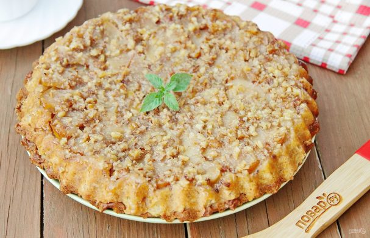
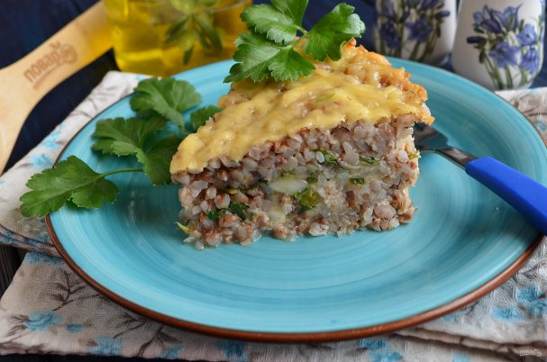
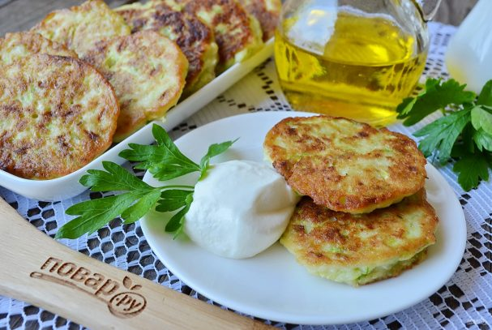
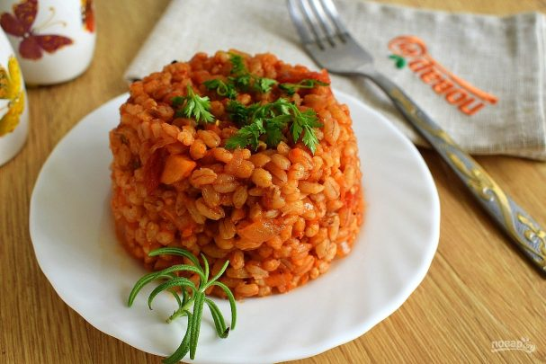
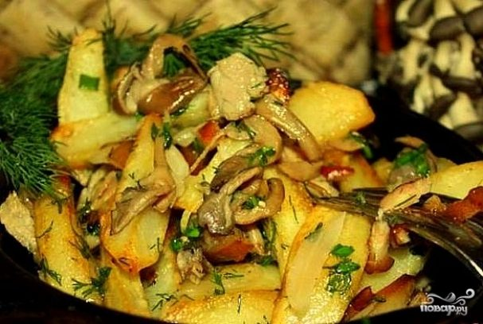
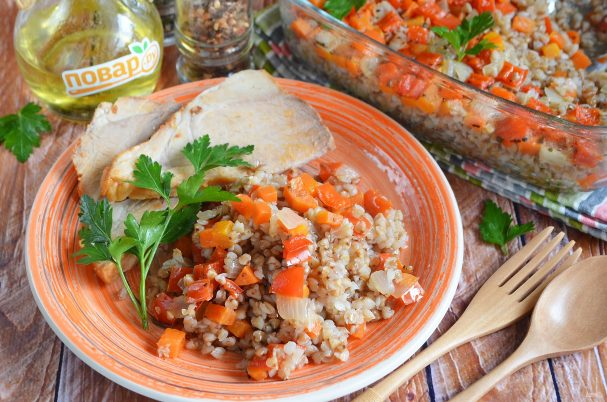

Яблочный пирог

Ингредиенты:
- Мука — 180 Грамм
- Растительное масло — 80 Миллилитров
- Уксус яблочный — 1 Чайная ложка
- Сахар — 120 Грамм
- Сода — 1 Чайная ложка
- Ванилин — 1 Грамм
- Корица — 0,5 Чайных ложки
- Яблоко — 3 Штуки
- Орехи грецкие — 30 Грамм
- Подготовьте все ингредиенты
- Два яблока среднего размера разрежьте пополам, удалите сердцевину и натрите на крупной терке.
Шкурку уберите, а мякоть переложите в глубокую миску
- Добавьте 70 гр. сахара, яблочный уксус и растительное масло. Перемешайте
- Насыпьте муку, соду, ванилин и корицу
- Перемешайте. Тесто должно быть достаточно густым и вязким
- Дно формы для выпечки застелите пергаментом и хорошо смажьте маслом. Грецкие орехи
измельчите, смешайте с оставшимся сахаром и распределите равномерно по дну формы
- Оставшееся яблоко разрежьте пополам, удалите сердцевину и нарежьте дольками. Выложите
ровным слоем на ореховую крошку
- Сверху распределите тесто и разровняйте его ложкой, оно должно заполнить все пустоты
- Выпекайте при 180 градусах. Готовность можно проверить деревянной шпажкой или спичкой
- Дайте пирогу немного остыть в форме, после чего переверните аккуратно на тарелку дном вверх
и снимите пергамент. Сверху должны оказаться нежные и сочные яблоки с орехами в карамельном
соусе. Яблочный пирог готов
- Приятного аппетита!
Гречневая запиканка

Ингредиенты:
- Вареная гречневая каша — 2 Стакана
- Сыр твердый — 175 Грамм
- Лук — 1 Штука
- Петрушка (укроп) — 1 Пучок
- Соль — По вкусу
- Смесь перцев — По вкусу
- Яйцо — 3 Штуки
- Молоко — 100 Миллилитров
- Масло растительное — 1 Чайная ложка
- Подготовьте продукты, отмерьте каши два стакана. Не стоит добавлять больше, иначе не хватит яичной
заливки.
- Возьмите огнеупорную форму, смажьте растительным маслом. Распределите один стакан гречневой каши.
- Сверху разложите часть тертого сыра. Большую часть сыра я оставила на верхний слой. Но можно поделить
и поровну.
- Лук порежьте тонко полукольцами, вымойте зелень и порубите мелко ножом. Равномерно распределите
поверх сыра лук и зелень. Присыпьте черным молотым перцем или смесью перцев.
- Распределите равномерно второй стакан гречки. Немного ложкой утрамбуйте кашу, но не сильно.
- Три яйца смешайте с молоком и щепоткой соли. Залейте кашу, я использовала крупные куриные яйца, мне
хватило заливки. Сверху разложите оставшийся сыр. Поставьте форму в горячую духовку на 20-25 минут,
температура — 200 градусов.
- Запеканка готова! Не спешите подавайте ее на стол, ей нужно немного остыть, тогда она легко режется
на порционные кусочки.
- Приятного аппетита!
Оладьи из кабачков

Ингредиенты:
- Кабачок — 1 Штука
- Сыр твердый — 100 Грамм
- Яйцо — 1 Штука
- Укроп — 1 Пучок
- Соль — По вкусу
- Мука — 3 Ст. ложки
- Соль — По вкусу
- Перец черный молотый — По вкусу
- Растительное масло — По вкусу
- Подготовьте продукты. Вымойте кабачок, срежьте кончики. Зелень сполосните, порежьте мелко. Натрите
сыр на мелкой терке.
- Кабачок натрите на крупной терке, отожмите сок.
- Добавьте яйцо, зелень, соль, перец черный молотый. Перемешайте.
- Добавьте тертый сыр, хорошо перемешайте.
- Последней всыпьте муку, хорошо перемешайте, чтобы не образовались мучные комочки.
- Тесто должно получиться средней густоты, за счет сыра оно более плотное.
- Разогрейте сковороду с растительным маслом. Столовой ложкой набирайте тесто и выкладывайте в виде
кружочка. Жарьте на медленном огне до образования корочки.
- Лопаткой переверните оладьи и обжарьте с другой стороны до золотистой корочки.
Томатное перлотто

Ингредиенты:
- Крупа перловая — 1 Стакан
- Томаты в собственном соку — 400 Грамм
- Соус томатный — 2 Ст. ложки
- Лук — 1 Штука
- Чеснок — 3 Зубчика
- Сахар — По вкусу
- Соль — По вкусу
- Розмарин — 1 Штука
- Базилик — 1 Штука
- Масло оливковое — 2 Ст. ложки
- Подготовьте необходимые продукты. Перловую крупу залейте кипятком, оставьте на ночь. Слейте воду, залейте
кипятком так, чтобы вода покрыла крупу на палец, и отварите до готовности в течение 15-20 минут.
- Я варю в мультиварке в режиме "Крупа". Откиньте крупу на сито.
- Пока отваривается крупа, очистите лук и чеснок, измельчите. Разогрейте масло на сковороде с высокими
бортиками. Пассеруйте лук и чеснок до мягкости. Помидоры очистите от кожицы, разомните вилкой. Добавьте
томатное пюре, томатный соус, соль, сахар по вкусу, перемешайте.
- Приправьте измельченными розмарином и базиликом, тушите в течение 10 минут.
- Готовую крупу добавьте в томатный соус, тушите 5 минут. Поперчите по вкусу.
Вешенки, жареные с картошкой

Ингредиенты:
- Вешенки — 0,5 Килограмма
- Картофель — 1 Килограмм
- Лук репчатый — 1 Штука
- Соль — По вкусу
- Перец душистый молотый — По вкусу
- Масло растительное — По вкусу
- Вымыть и почистить картофель.
- Вешенки осторожно промыть, затем выложить на полотенце и полностью высушить.
- Нарезать вешенки произвольными кусочками.
- В одной из двух заранее подготовленных сковород разогреть пару столовых ложек растительного масла.
Выложить вешенки, накрыть крышкой. Спустя пару минут грибы дадут столько жидкости, что будут в ней
плавать - в этот момент надо открыть крышку, и пусть она себе выпаривается. Когда сковорода станет
практически сухой, добавить немного масла и обжаривать вешенки на сильном огне, постоянно помешивая,
до румяного цвета.
- А тем временем разогреть другую сковороду с небольшим количеством масла и обжарить картофель. Чем
суше он будет, тем быстрее и равномернее покроется красивой золотистой корочкой, так что заранее
откиньте его на дуршлаг.
- Когда картофель уже хорошо прихватится, добавить к нему измельченную луковицу, посолить, поперчить,
перемешать. Жарить на сильном огне!
- Через 2-3 минуты после того, как был отправлен на сковороду лук, добавить к картофелю обжаренные
вешенки. Только не забудьте их предварительно посолить и поперчить!
- Готовить еще минут 5, стараясь как можно реже и аккуратнее перемешивать - картофель уже почти готов и
может разваливаться от слишком интенсивных манипуляций, превращаясь в жареное пюре. Поэтому огонь
должен быть достаточно сильным - прихватился низ корочкой, аккуратно поддели лопаткой, перевернули.
Через пару минут повторили процедуру. И так далее до полной и безоговорочной победы;)
Оладьи из кабачков

Ингредиенты:
- Гречка ядрица — 130 Грамм
- Лук репчатый — 1 Штука
- Морковь — 1 Штука
- Сладкий перец — 1 Штука
- Базилик сушенный — 0,5 Чайных ложки
- Соль — По вкусу
- Перец черный молотый — По вкусу
- Растительное масло — 2-3 Ст. ложек
- Вода — 2 Стакана
- Подготовьте продукты, приступим. Гречку переберите, замочите на несколько минут в воде, потом
промойте хорошо от пыли. Вскипятите два стакана воды. Включите духовку на 200 градусов.
- Овощи очистите, вымойте. Порежьте кубиками.
- На растительном масле обжарьте лук и морковь до мягкости, добавьте перец и еще пару минут жарьте.
- В огнеупорной форме (в которой планируете запекать) смешайте жареные овощи и гречку, добавьте соль,
пере черный молотый, базилик. Перемешайте.
- Залейте двумя стаканами кипятка.
- Накройте плотно фольгой и поставьте в горячую духовку (180 градусов) на 30 минут.
- Через 30 минут не спешите гречку открывать, просто выключите духовку и оставьте ее запариться еще минут на 10-15.
- Гречка с овощами в духовке готова! Пробуйте, нежная и рассыпчатая каша с ароматом овощей и базилика.